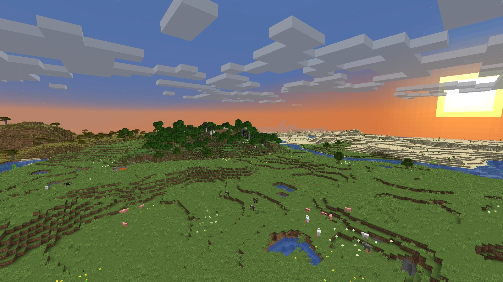
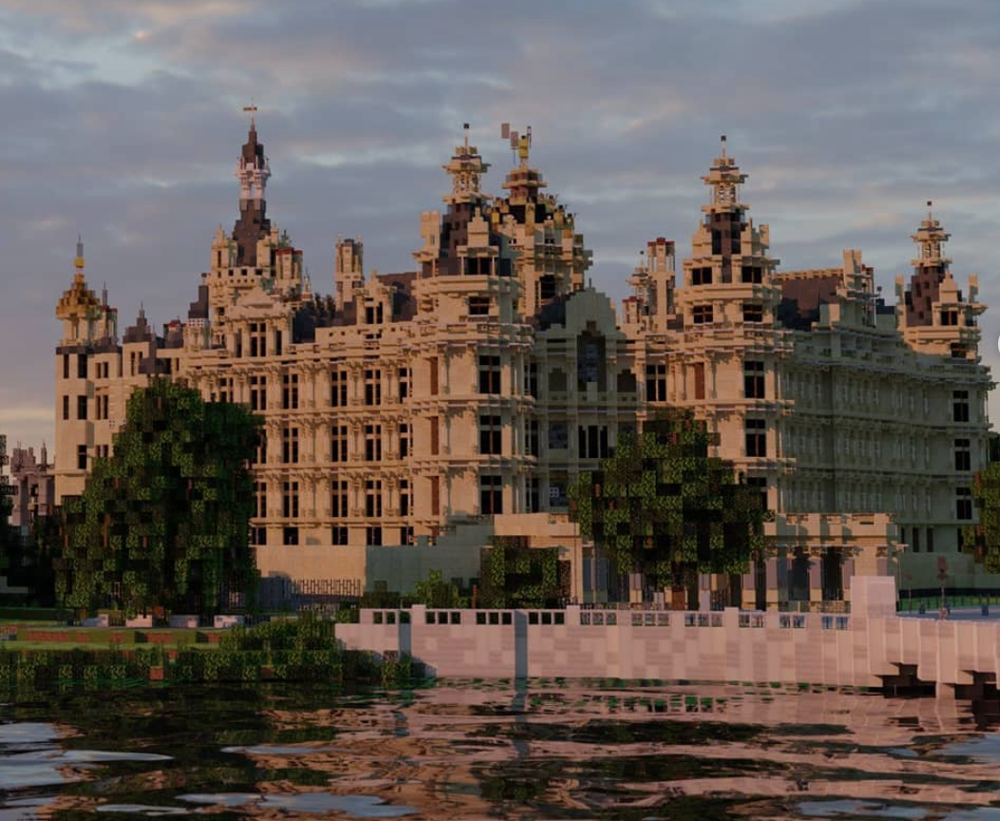
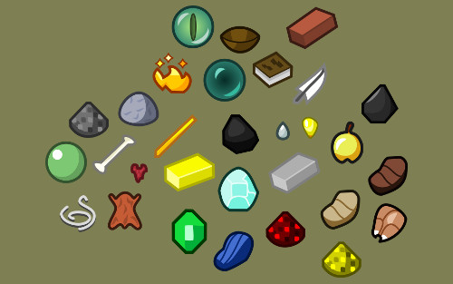
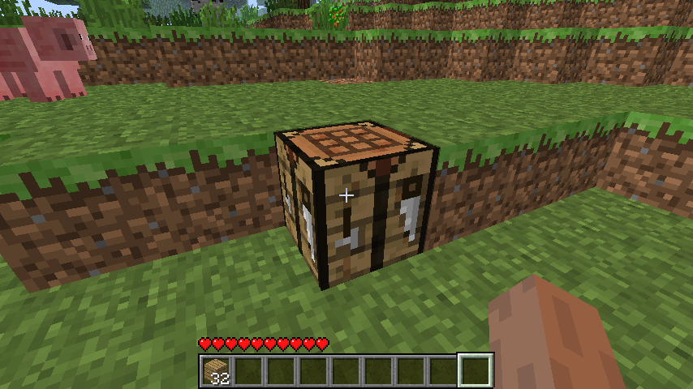
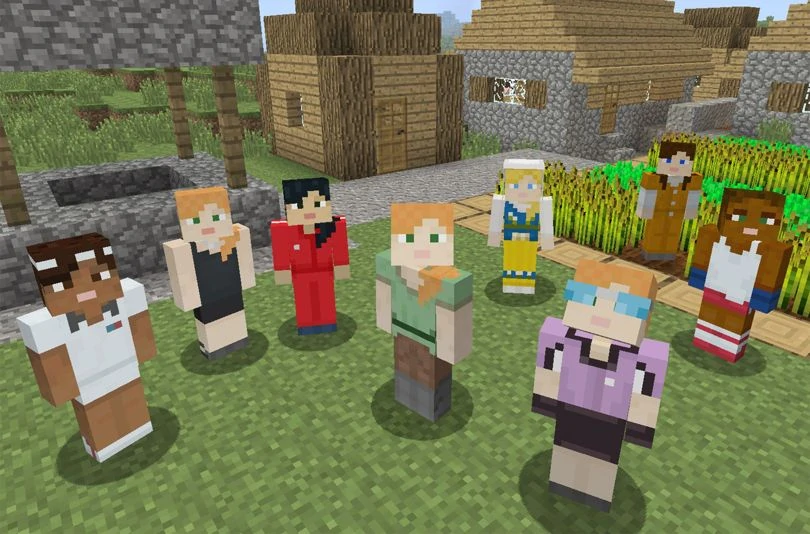

Über Minecraft
Minecraft ist ein Open-World-Spiel, in dem Spieler Blöcke platzieren und Abenteuer erleben können. Es wurde 2011 veröffentlicht und hat seitdem eine riesige Fangemeinde aufgebaut.

Weltbau
Einer der besten Teile von Minecraft ist das Bauen. Spieler können ihre Kreativität ausleben, indem sie Gebäude, Brücken, Türme und vieles mehr erstellen. Es gibt keine Grenzen für das, was man bauen kann.

Ressourcen-Sammlung
Um zu überleben und zu bauen, müssen Spieler Ressourcen sammeln, wie Holz, Stein, Eisen und mehr. Dies kann durch das Abbauen von Blöcken in der Welt erreicht werden.

Überleben
In Minecraft müssen Spieler auch überleben, indem sie Nahrung finden, Schutz vor Gegnern wie Creeper und Skeletten finden und über Nacht überleben. Es ist eine Herausforderung, aber auch Teil des Spaßes am Spiel.

Multiplayer
Minecraft bietet auch eine Multiplayer-Option, bei der Spieler mit Freunden oder anderen Spielern auf der ganzen Welt zusammen spielen können. Gemeinsam kann man Abenteuer erleben, Gebäude bauen und Ressourcen sammeln.
